Settings

I consider the menus and especially the settings the greatest thing I have done in any project.
The menus were fully usable with mouse, keyboard & controller.
There were animations, saving/loading, resetting, rebinding & much more in these settings.
Mission Select

The mission selection screen allows player to select which timeline and what kind of mission they want to go into.
There was also a difficulty slider which allows player to take on harder missions with better loot.